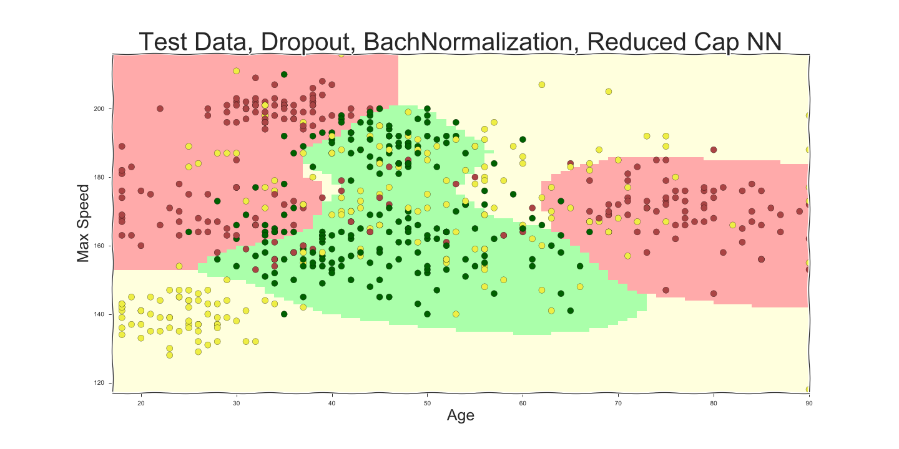

Data Set Insurance

Manual Classification - red

Manual Classification - yellow

Manual Classification - green

Decision Bounaries

Random - A Baseline

It still gets 33% percents right
A few Hand Coded Rules

Blocks
Decision Trees

Still Rules - but this time learned from data
Ensemble - Random Forest

Averaging over many decision trees
K Nearest Neighbors

Simple, but fractal
Support Vector Machines

Simple in a higher dimension
Neural Networks

Composed of many simple neurons